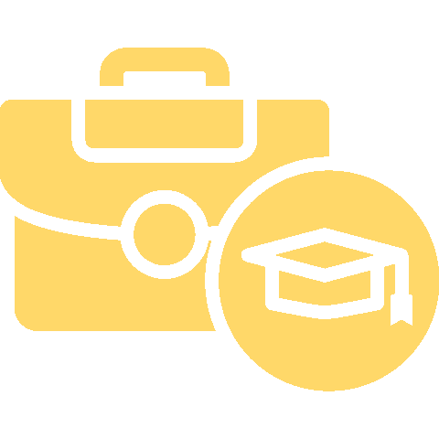

Ter voorbereiding op de twee periodes werkplekleren in het tweede jaar ben ik reeds een voormiddag op kijkstage geweest bij Lykios en nam ik al deel aan 2 jobbeurzen georganizeerd door Thomas More.

Stage
Aan deze pagina zal dus in het schooljaar 2024-2025 nog verder gebouwd worden.